DAILY TORREGLIA
山脚下城
超市、咖啡、熟食店、Luxardo 酒厂和日常交通都集中在这里。它不需要“观光”，价值是让我们真正按本地节奏住下来：早上站着喝 espresso，午后买菜，晚上再上山吃饭。
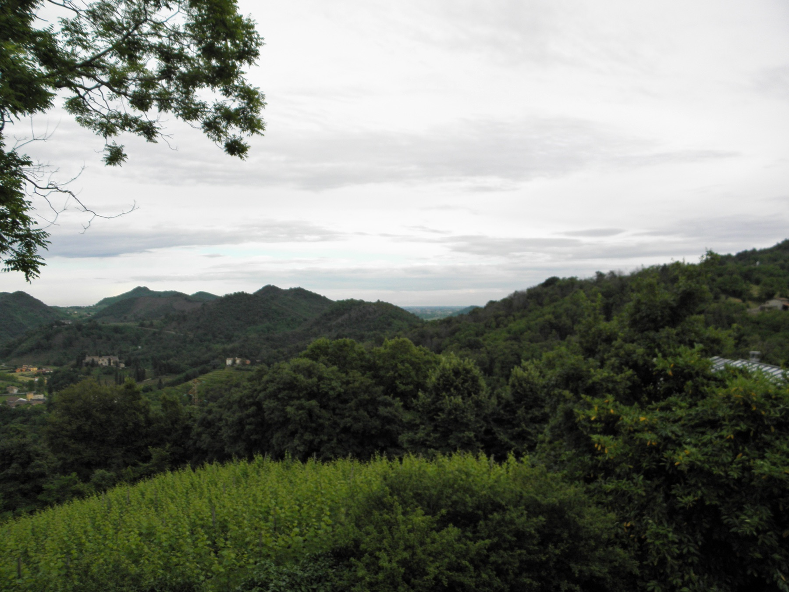
Torreglia Alta · 丘陵边缘的日常视角A local field guide · 30分钟生活圈
它不是威尼斯与托斯卡纳之间的空白，也不是“有温泉和几个酒庄”的郊区。81 座古火山丘从波河平原突然拱起，把文艺复兴别墅、修道院、葡萄园、冷泉与温泉压缩在一辆车半小时可到的范围里。
知道它为什么长成这样，再开车经过那些圆锥形山头，就不会觉得只是“普通乡下”。
Colli Euganei 最迷人的不是某一个绝景，而是很多时代和很多种生活，在极短距离里层层叠在一起。
四千多万年前，这里还在海下。两轮火山活动把黏稠的岩浆推成一个个熔岩穹丘；海退、侵蚀之后，它们变成今天从平原上突然冒出的独立山峰。开车十分钟，视线就会从 Padova 方向的平坦农田切换成狭窄弯道、栗树林、葡萄梯田与火山岩墙。
不同朝向又制造了小气候：向阳坡能长橄榄、丝兰与地中海灌木，背阴坡却是栗树和山地林木。丘陵下方的热水并不是“火山口温泉”，而是雨水经过地下长距离循环，被地热加温后在 Abano 与 Montegrotto 一带涌出。
后来，罗马人采石、种葡萄并利用水源；威尼斯共和国时期，贵族和教会在丘陵边缘修别墅与修道院。于是这里的风景从来不是纯自然，而是几百年持续经营出来的“可居住景观”。
不是缩小版托斯卡纳。它更紧凑、更湿润，也更像 Veneto 人自己的后花园。
游客常常只穿过下城去餐厅，但理解这三个层次，才算知道“家”坐落在哪里。
超市、咖啡、熟食店、Luxardo 酒厂和日常交通都集中在这里。它不需要“观光”，价值是让我们真正按本地节奏住下来：早上站着喝 espresso，午后买菜，晚上再上山吃饭。
围绕 San Sabino 教堂形成的旧聚落在山坡上，餐厅和住宅沿弯路展开。重点不是宏伟古迹，而是傍晚在高处看平原慢慢亮灯，再吃一顿不赶时间的家庭晚餐。

Villa dei Vescovi、San Martino 教堂、旧路和葡萄园组成 Torreglia 最完整的一幅画。这里最适合步行理解：别墅不是孤立建筑，而是故意借山势、田地和远景构成生活剧场。
正常交通下的量级，不追求门到门精确。丘陵道路短但弯，周末和活动日应多留十分钟。
不是穷举。下面按“能否帮助我们理解这片地”排序，每个都说明看什么、怎么搭配，以及可能踩的坑。
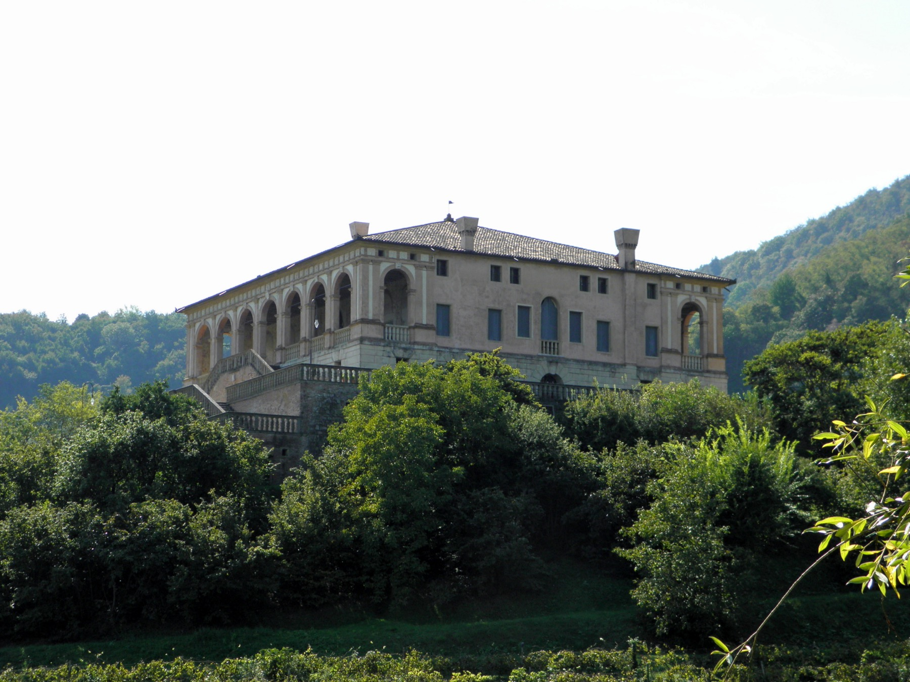
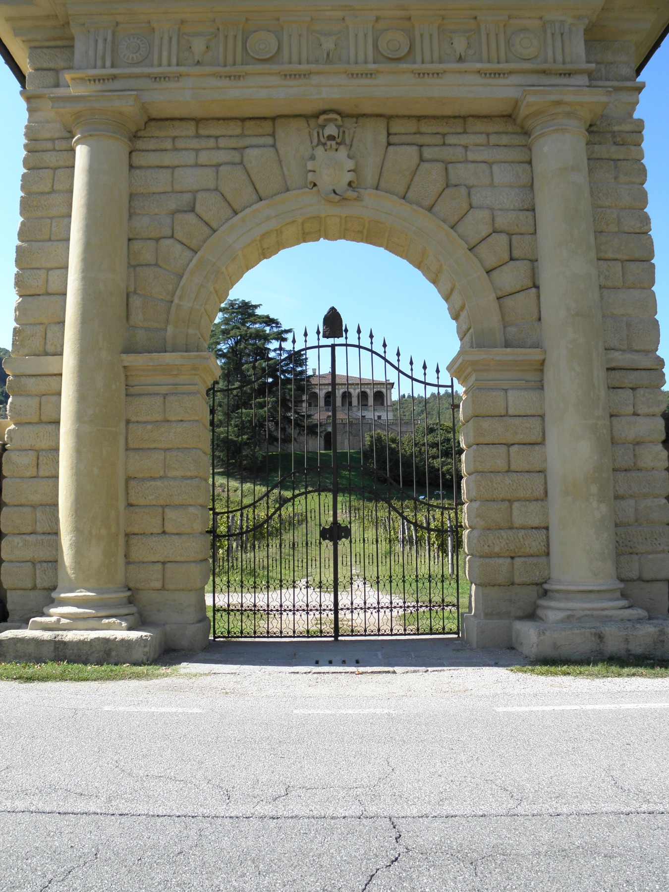
这座 16 世纪别墅比 Palladio 的成熟作品更早，却已经把凉廊、台地和山谷视线连成一体。室内的 Lamberto Sustris 壁画把古典神话和乡间景色继续画进房间，真正的主角始终是“内外之间”。
2026 年 9 月通常周三至周日 10:00–18:00，最后入场 17:00；临时活动可能影响参观，出发前以 FAI 预约页为准。
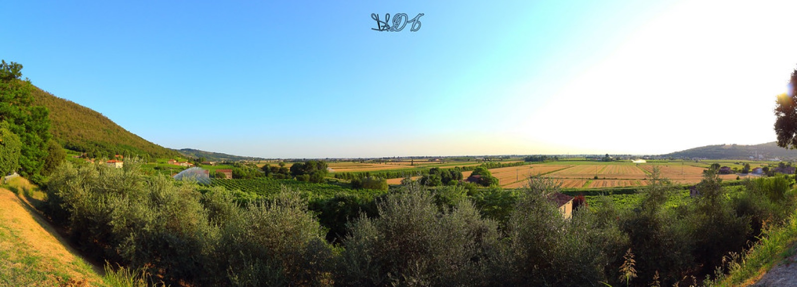
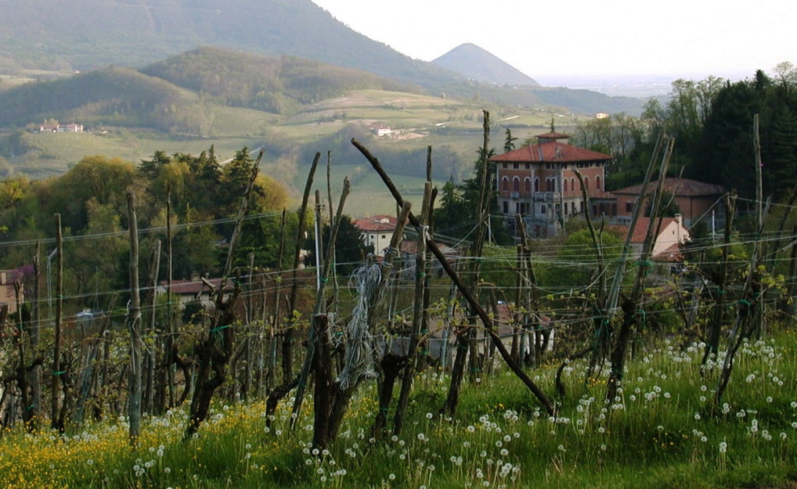
Torreglia Alta 的价值是方向感：站在山上，能看见丘陵怎样从 Padova 平原的边缘突然升起。Fonte Regina 则是更安静的切口——林中冷泉常年约 14°C，旁边还能看到与古代输水系统相关的粗面岩构件。
这一组不必成为“正式行程”。最适合刚到家的下午或某顿晚饭前，穿防滑鞋，走一小段、看懂方位，然后回到 Torreglia Alta 吃饭。
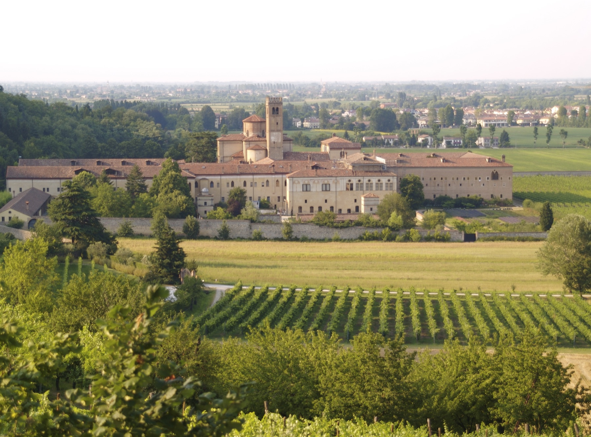
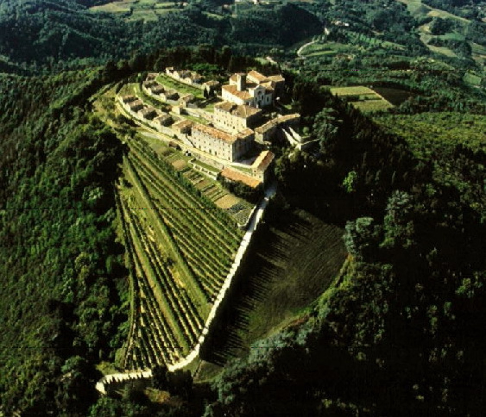
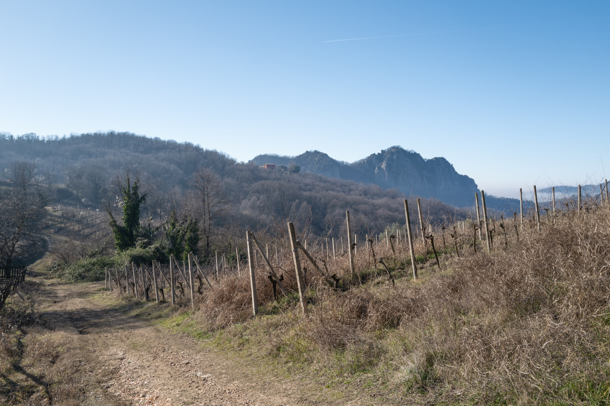
Praglia 是可进入的修道院世界：回廊、教堂、食堂、会议厅，以及至今仍由本笃会团体维护的生活秩序。Monte Rua 则是山顶的 Camaldolese 隐修院，围墙里的独立小室强调退隐和沉默。
Praglia 个人访客通常无需预约，9–10 月平日（周一除外）15:30、16:30 有导览；周日及节假日下午班次更多。无固定门票，建议捐献。请以当日修道院信息为准。
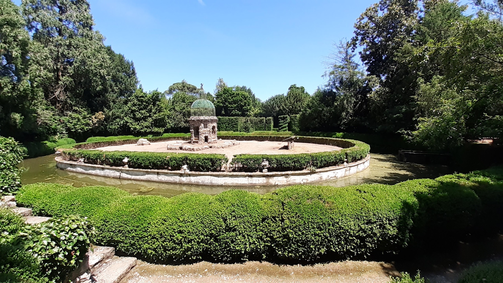


Valsanzibio 不是普通“漂亮庄园”：Barbarigo 家族把迷宫、水景、雕像与路径组织成一段从迷失到救赎的寓言。Catajo 看上去像城堡，内部却更像 Obizzi 家族为自己打造的巨型叙事机器，主层壁画充满战争、联姻和自我神话。
Valsanzibio 2026 季从 2 月 21 日至 12 月 8 日开放，通常每日 10:00 至日落；成人票 €14。Catajo 开放日更易随活动调整，务必当天查官方日历。

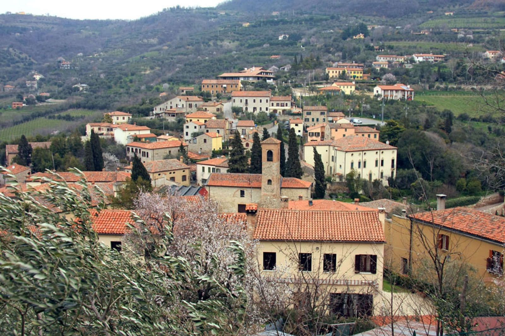
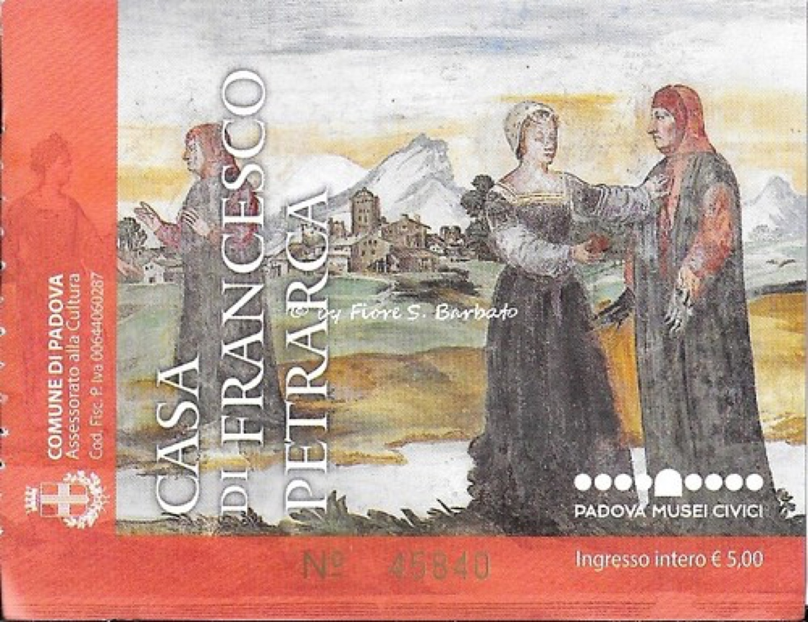
14 世纪诗人 Petrarch 在这里度过晚年，他的故居和墓地给村庄一个清晰故事；但真正值得的是村落尺度本身：两条坡道连接上下聚落，石屋、橄榄树、葡萄园和小店都还在同一张步行地图上。
不建议把 Arquà、Monselice、Este 一天全塞满。对常来意大利的家庭而言，留白比“集齐三镇”更有价值。


Quota 101 离家近、空间现代，是最轻松的入门；Ca’ Lustra 更适合认真理解本地土壤与酿造；Maeli 以黄色莫斯卡托做 Fior d’Arancio，体验更偏香气与起泡酒。
本区最值得先记住两种词：日常清爽的 Serprino，以及可做干型、起泡或甜酒的 Fior d’Arancio DOCG。
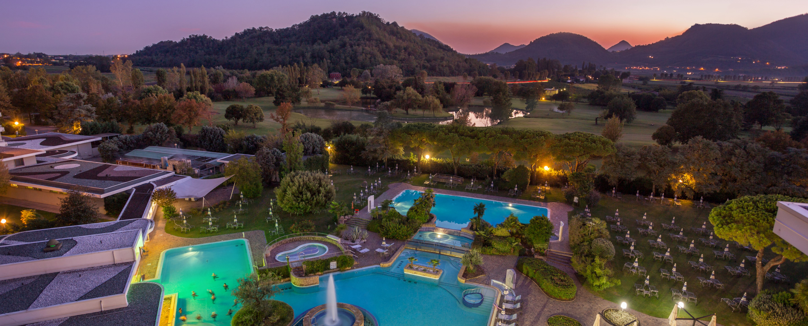
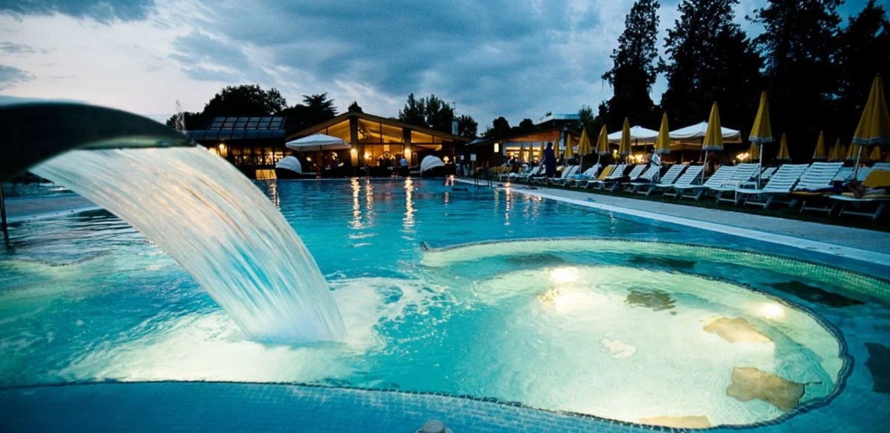
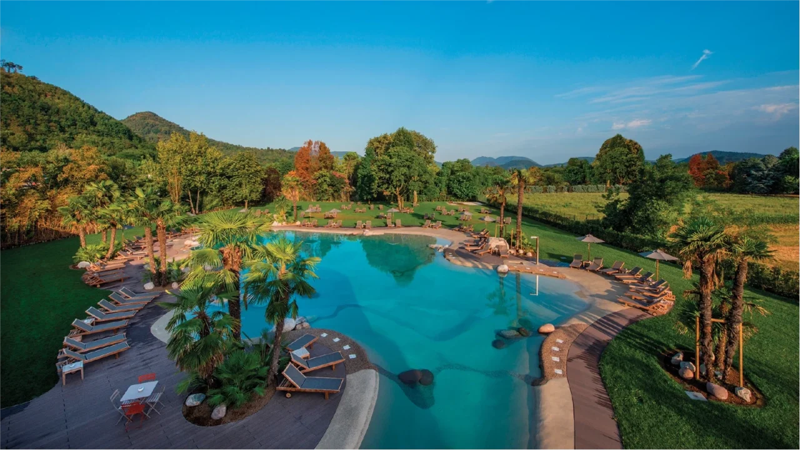
这里的独特性在地下：雨水在前阿尔卑斯地区渗入深层，沿断裂系统长距离流动、升温并富集矿物质，最后在欧加内丘陵脚下涌出。酒店把热水、泥疗和康养做成了整套度假传统。
放在长途自驾回来后的下午，比专门占一个全天更聪明。提前确认日间票、浴帽规定、疗程预约和退房客使用时段。
Luxardo 博物馆。Torreglia 是这家达尔马提亚酒厂战后重建的地方，能把 20 世纪家族史接回本镇。
Monte Venda。最高峰不以“登顶打卡”取胜，而以树林、旧修道院遗址和完整的丘陵尺度取胜。
Luvigliano 或 Torreglia Alta 的短走。无须预订，不需要给它一个“景点日”。
城堡、花园、修道院三连。它们都要慢看，选一个主角，再加午餐或咖啡就好。
不是固定日程，而是四个可随天气、体力和全家兴趣切换的模块。
不设硬任务，找一处能看见 Padova 平原的停靠点，理解“家在平原与山的接缝上”。
穿鞋方便就走林间冷泉；想更轻松则在 Villa dei Vescovi 外围和葡萄园边散步。
回镇上喝一杯，或直接接 Torreglia Alta 的晚餐。这个模块可以在旅程中重复。
适合：抵达日、跨城回来后、天气只剩一小段晴。
留 75–90 分钟，先在凉廊找远景，再看壁画，不用逐房间读说明。
从 San Martino 一带走 45–60 分钟，回望别墅与葡萄田。
酒庄需预约；若没有档期，镇上喝 Serprino 反而更自然。
适合：第一次认识家附近；建筑、风景和味觉刚好各占三分之一。
开门时进园，留 2 小时；迷宫不要赶，早上光线和温度也更舒服。
不要跨区追餐厅，就近选 agriturismo / trattoria，给午饭留 90 分钟。
按官方当日班次到达，跟着修士或导览人员进入回廊与公共空间。
药草、蜂蜜、护肤或酒只按需要买；晚上回家做饭即可。
适合：四个人共同完成；步行温和，且每段都有明确内容。
免费但建议预约。2026 年 9 月通常周三至周日开放，按 09:30–11:00 或 15:30–17:00 时段参观。
选 Al Pirio / Afazenda 一类离家近的正餐，或买熟食回家。
预订半日票，把下雨天变成恢复日；四个人可以各自做不同项目。
适合：连续开车之后、父母想放松、山路湿滑时。
与你们 9 月 15–29 日的旅行窗口相交。节庆和导览会变化，出发当天再点官方链接确认。
第 75 届葡萄节。酒庄摊位、食物、音乐与花车巡游；9 月 20 日周日下午是最完整的一段。
看家庭版现场攻略 →公园日历列有从 Montegrotto、Battaglia 到 Arquà 的带队骑行。适合真的爱骑车的人，不是全家默认项目。
查公园当月日历 ↗公园日历中的自然向导活动，可作为不熟悉本地步道时的安全入口。
查报名状态 ↗葡萄园最有动作、酒庄也最忙。景色与气氛都好，但临时上门最容易扑空，至少提前数天联系。
选一间合适的酒庄 →不必追“名菜打卡”。记住这些词，在菜单、熟食店和酒庄里就能开始辨认地方。

用 Moscato Giallo 酿成的 Colli Euganei DOCG，可做干型、起泡或 passito 甜酒。别自动把它理解成甜酒。
本地轻快的白葡萄酒，常见微起泡或起泡版本。比“大红酒品鉴”更适合家附近的午饭和 aperitivo。
向阳火山坡能种橄榄。碰到新油或小产区油，值得试味，但不要只按包装判断。
Torreglia 传统与烤乳鸽相关，味道和做法都偏老派。感兴趣可以点一份分享，不必四个人都押在它上面。
Arquà 常见枣类水果与其制品，brodo di giuggiole 是甜味利口酒。更像地方记忆，不一定是人人喜爱的口味。
Luxardo 的酸樱桃利口酒把 Torreglia 接进一段跨亚得里亚海的家族史；博物馆比单纯买酒更有意思。
这里很容易安排，也很容易因为“都很近”而塞得太满。好的体验来自节奏，不来自项目数量。
开放信息核对于 2026 年 9 月 3 日。页面不是官方公告，临时活动、天气与维护仍可能改变现场。